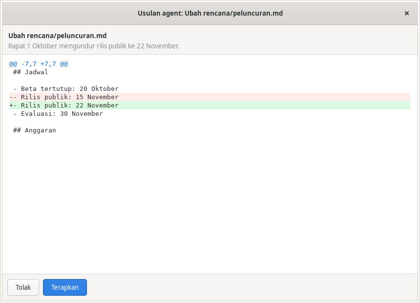
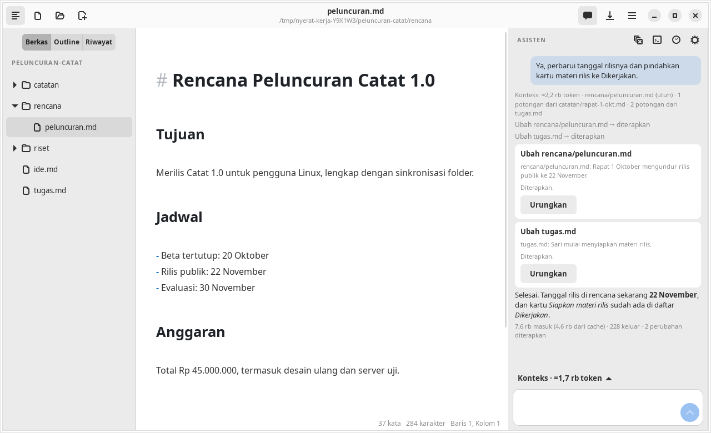
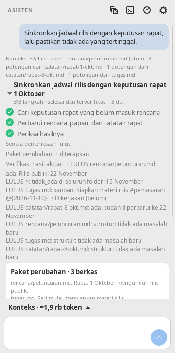
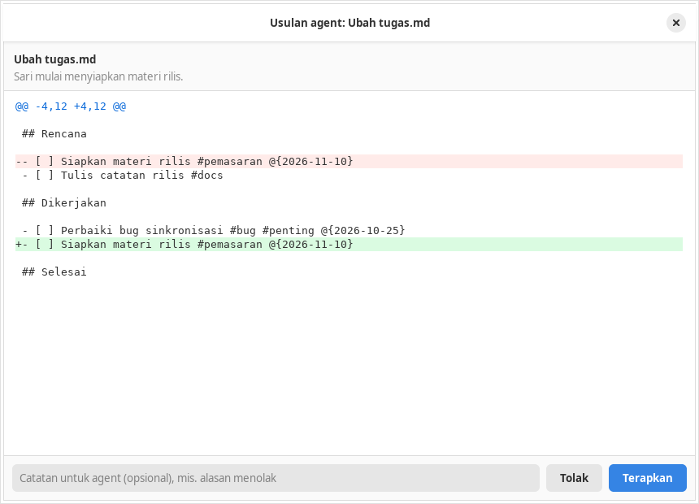

Dalam dua hari, asisten Nyerat berkembang dari panel chat dengan 4 alat baca menjadi agent dengan 16 alat. Kini ia bisa merencanakan pekerjaan, mengusulkan paket perubahan, memeriksa hasilnya, dan melanjutkan pekerjaan setelah terputus. Satu prinsip dipegang sejak commit pertama: agent boleh membaca dengan bebas, tetapi setiap perubahan berkas harus disetujui pengguna dulu. Bab terakhir menunjukkan langkah berikutnya: Nyerat menugaskan kartu kanban ke agent lain (pi) yang bekerja di folder proyek terpisah, sementara Nyerat hanya memegang papannya. Halaman ini menjelaskan cara prinsip itu dijaga di setiap tahap. Isinya mencakup struktur data, alur loop, batas keamanan, biaya, dan simulasi kecil yang bisa Anda coba sendiri.
src/agent/Change + preflight; harness eksternal hanya di folder proyek lain (Bab 9)Setiap batang adalah satu commit yang mengubah agent. Warnanya membedakan tiga jenis alat: baca (menelusuri berkas dan riwayat Git), usulan (menghasilkan perubahan yang menunggu persetujuan), dan kendali (rencana dan verifikasi, yang tidak menyentuh berkas). Arahkan kursor ke batang untuk melihat jumlah tes dan baris kode di titik itu.
.nyerat/chats dan bisa dilanjutkan.cari_naskah → cari_dokumen; deskripsi alat dinetralkan.buat_berkas, ubah_berkas) yang hanya menghasilkan usulan dan menunggu Terapkan/Tolak.ubah_kanban dan diff multi-hunk.atur_pekerjaan), paket (usulkan_paket), verifikasi, journal tindakan, retry, dan ringkasan riwayat.@pi dikerjakan pi di folder proyek lain, antrean per folder, Log pi, kartu pindah ke Dikerjakan/Review.[[catatan]] di kartu menjadi konteks prompt pi: isi catatan dari folder kerja disalin ke prompt, dibatasi per catatan dan total.atur_pekerjaan tampil sebagai daftar centang (WorkList): progres, spinner di langkah yang sedang dikerjakan, durasi giliran; dirapikan ke idiom GNOME di 4a35bc8 (Adw.Spinner, label aksesibel).Kemampuan agent bertambah empat kali lipat, tetapi bentuk dasarnya tetap sama. Setiap fitur baru harus memenuhi empat aturan ini. Karena itu, setiap bab di bawah juga bisa dibaca sebagai cara memenuhi aturan-aturan tersebut.
Logika agent di src/agent/ tidak meng-import GTK. Alat bekerja di atas SourceFile[], mengembalikan nilai, dan tidak melempar. Karena itu, semuanya bisa diuji tanpa jendela dan tanpa jaringan.
Alat pengubah hanya menghasilkan Change { before, after }. Yang menulis ke disk adalah jendela, dan itu terjadi setelah pengguna menekan Terapkan dan isi berkas diperiksa ulang.
Pengguna dapat melihat konteks yang dikirim beserta jumlah tokennya, langkah penelusuran, diff, journal, dan sekarang juga Log agent. Tidak ada keputusan yang tersembunyi.
Setiap sumber daya punya batas: token konteks, putaran model, anggaran bacaan, ukuran hasil alat, jumlah tindakan per paket, dan path di dalam folder kerja.
Arah panggilan tidak pernah terbalik. agent/ tidak tahu apa pun tentang editor atau widget. Jendela hanya memberinya cara membaca berkas (ChatHost) dan cara meminta keputusan pengguna (onProposal, onBatchProposal).
src/agent/context.tsMasalah. Model tidak bisa melihat editor. Jika folder kerja berisi ratusan KB catatan, semuanya tidak mungkin dikirim, dan mengirim terlalu banyak juga mahal dan lambat. Jadi mutu jawaban sangat ditentukan oleh satu fungsi: buildContext().
Desain. Konteks dibagi dua bagian dengan sifat berbeda, lalu diurutkan supaya bagian yang jarang berubah berada di depan:
HISTORY_SHARE).@mention, dan potongan relevan dari berkas lain. Bagian ini ditempel di depan pertanyaan terbaru saja.DEFAULT_BUDGET = 48_000 // token
estimateTokens = s => ceil(s.length / 3)
// sengaja boros untuk teks Indonesia
// urutan: pilihan → dokumen aktif → @mention
// → peta proyek → potongan BM25splitChunks(file, text) // per heading,
// bagian >1.800 karakter dipecah di baris kosong
rankChunks(chunks, query) // BM25, k1 = 1,5, b = 0,75
// heading dihitung dua kali
buildQuery: pertanyaan ×1, pilihan ×0,5,
2 pertanyaan terakhir ×0,4Pertanyaan sebelumnya ikut masuk ke kueri dengan bobot kecil. Dengan begitu, pertanyaan lanjutan seperti "lalu siapa yang menanganinya?" tetap menemukan potongan yang tepat. Imbuhan dipangkas seadanya (-nya, -kan, -an, …) sehingga "rapatnya" cocok dengan "rapat".
note? Interaktif · perhitungan nyataIni adalah folder kerja tiruan dengan catatan rapat, rencana, riset, dan papan tugas. Pemecah heading, tokenizer, dan BM25 di bawah adalah salinan logika context.ts. Ubah pertanyaan atau anggaran untuk melihat potongan yang terpilih. Potongan yang tidak muat dalam anggaran tidak dikirim. Model masih bisa membacanya nanti dengan alat.
Anggaran dihitung dengan perkiraan yang sama (3 karakter ≈ 1 token). Di Nyerat, potongan bersaing dengan pilihan, dokumen aktif, dan peta proyek di dalam anggaran 48.000 token. Di sini anggarannya sengaja dibuat kecil supaya efeknya terlihat.
Penyedia seperti DeepSeek menyimpan cache untuk awalan pesan yang sama persis dengan permintaan sebelumnya. Satu karakter berbeda di awal sudah cukup untuk memutus cache seluruh pesan sesudahnya. Karena itu, posisi kursor dan pilihan (yang berubah setiap pertanyaan) tidak boleh diletakkan di system.
Bandingkan dua susunan. Kiri: posisi kursor diselipkan ke system. Kanan: susunan Nyerat, dengan semua bagian yang berubah masuk ke note di akhir. Batang menunjukkan token masuk per pertanyaan. Warna biru menandai token yang bisa dilayani dari cache.
Model ini menganggap naskah tidak berubah, note ±2.500 token, dan setiap giliran menambah riwayat ±600 token. Pada susunan kiri, posisi kursor ditulis tepat setelah instruksi (±1.500 token), sehingga hanya instruksi yang tetap sama dari permintaan sebelumnya. Ini bukan hasil ukur DeepSeek. Angka sebenarnya per putaran (token masuk, dari cache, keluar) bisa dilihat di Log agent. Ketika naskah berubah, dokumen aktif di system ikut berubah dan cache memang harus dibangun ulang.
src/agent/session.ts, tools.tsSatu giliran dimulai dengan memanggil model. Jika model meminta alat, alat itu dijalankan, hasilnya dikirim kembali, lalu model dipanggil lagi. Loop berhenti ketika model memberi jawaban. Versi pertama hanya punya 4 alat baca: daftar_berkas, cari_naskah (BM25), cari_teks (teks persis), dan baca_berkas.
for (round = 0; round < MAX_ROUNDS; round++) { // 10
useTools = round < MAX_ROUNDS - 1
result = await provider.chat({ messages,
tools: useTools ? TOOLS : undefined })
if (!result.toolCalls.length) break // jawaban
for (call of result.toolCalls) {
out = runTool(call.name, call.arguments, files)
if (cost(out) > toolBudget) out = 'Anggaran habis…'
messages.push({ role: 'tool', content: out })
}
}TOOL_SHARE). Jika terlewati, model diminta menjawab dengan informasi yang sudah ada dan menyebut apa yang belum diperiksa.MAX_RESULT_TOKENS). Hasil yang lebih panjang dipotong dengan petunjuk untuk membaca rentang tertentu.Ada beberapa keputusan kecil yang penting. Alat tidak pernah melempar: argumen JSON yang rusak menjadi pesan galat yang bisa dibaca model, supaya model bisa memperbaikinya sendiri. Hasil baca_berkas diberi nomor baris yang sama dengan konteks, sehingga rujukan "berkas:baris" konsisten. Alat hanya ditawarkan jika pengguna mengizinkan berkas lain dibaca (saklar konteks proyek). Selain itu, isi editor yang belum disimpan menggantikan versi di disk.
Permintaan pengguna: "Rapat peluncuran pindah dari Rabu ke Kamis 9 Oktober, perbarui semua dokumen." Ini peragaan alur loop versi sekarang (Bab 5 dan 8) dengan skenario yang sudah ditulis. Model sungguhan bisa memilih langkah lain. Saat paket diusulkan, Anda yang memutuskan.
chatstore.ts, transcript.ts, context.ts, tools.tsSetiap percakapan disimpan sebagai satu berkas di <folder>/.nyerat/chats/, dengan frontmatter (judul, model, dibuat) lalu bagian ## Anda / ## Asisten. Formatnya sengaja dibuat bisa dibaca dan disunting manusia, bukan basis data tersembunyi.
Pertanyaan dan jawaban. Mulai Bab 5, juga pekerjaan (tujuan, langkah, verifikasi) dan tindakan (journal beserta snapshot sebelum/sesudah). Folder .nyerat/ otomatis diberi .gitignore berisi *, karena isinya memuat kutipan dokumen.
Proses berpikir model, rincian konteks, hasil baca lengkap, dan pemakaian token. Konteks dokumen dibangun ulang setiap giliran (isi berkas bisa berubah), sehingga riwayat tetap kecil.
readProject tidak membaca folder bertitik, sehingga .nyerat/ tidak pernah muncul di hasil cari_dokumen. Tanpa aturan ini, jawaban lama bisa terbaca sebagai "fakta" dari dokumen.Nyerat awalnya dirancang untuk menulis buku, jadi prompt dan alatnya berbicara tentang "naskah". Setelah visinya diperluas menjadi personal workbench (catatan, rapat, riset, rencana), nama cari_naskah diganti menjadi cari_dokumen dan semua deskripsi alat dinetralkan. Model memilih alat berdasarkan nama dan deskripsinya. Nama yang terlalu sempit membuat model ragu memakai alat itu untuk notulen rapat.
src/agent/changes.ts, ui/proposalviewer.tsKebutuhan. Pengguna ingin agent tidak hanya berkata "ganti baris 12", tetapi juga melakukannya, tanpa kehilangan kendali atas berkasnya. Desain. Alat tulis tidak menulis apa pun. Ia hanya memvalidasi argumen, lalu menghitung hasilnya sebagai nilai:
interface Change {
kind: 'create' | 'edit' | 'delete' | 'move'
file: string // path relatif di folder kerja
before: string // isi saat diusulkan
after: string // isi bila diterapkan
reason: string // alasan, tampil di jendela tinjau
to?: string // move saja
}TOOLS // baca-saja, dijalankan langsung
CHANGE_TOOLS // menghasilkan Change saja
// sesi:
change = planChange(name, args, files)
answer = await handlers.onProposal(change)
// ↑ Promise yang menunggu jendela tinjau
if (answer.applied) applyToFiles(files, change)ubah_berkas meminta teks_lama yang muncul tepat satu kali. Jika tidak cocok, model mendapat pesan agar membaca berkas dulu atau menambah baris di sekitarnya. Cara ini lebih kuat daripada nomor baris, karena model sering salah menghitung baris. ubah_kanban (deb8aa5) tidak menyunting teks secara langsung. Ia memakai model papan yang sama dengan UI kanban (parseBoard → operasi → serializeBoard), sehingga hasilnya selalu papan yang valid.
Ada jeda antara saat usulan dibuat dan saat pengguna menekan Terapkan. Selama jeda itu pengguna bisa saja menyunting berkasnya. Karena itu, sebelum menulis, jendela memanggil preflight(). Usulan ditolak jika before tidak lagi sama dengan isi aktual, alih-alih menimpa suntingan pengguna.
function preflight(c, read) {
const at = read(c.file) // null = tidak ada
if (c.kind === 'create') return at === null ? null : `${c.file} sudah ada`
if (at === null) return `${c.file} tidak ada lagi`
if (at !== c.before) return `${c.file} berubah sejak diusulkan; minta usulan baru`
if (c.kind === 'move' && read(c.to) !== null) return `${c.to} sudah ada`
return null
}Agent mengusulkan perubahan di bawah. Coba Terapkan, lalu Urungkan. Setelah itu, ulangi tetapi sunting isi berkas di kotak teks sebelum menekan tombol. preflight, changeState, dan invertChange di sini adalah salinan dari changes.ts.
rencana/oktober.md (boleh Anda sunting)ubah_berkas
set_value() dipanggil di dalam sinyal changed adjustment. Nilainya berubah, tetapi viewport GTK tidak menerapkannya. Gulir sekarang dijadwalkan lewat idle. Tesnya memeriksa posisi footer di area terlihat, bukan hanya nilai adjustment. Tes yang hanya memeriksa angka internal bisa lulus walaupun tampilannya salah.before dan after, Anda mendapat diff, validasi, pemeriksaan konflik, dan nantinya Urungkan, semuanya dari struktur yang sama.work.ts, batch.ts, verification.tsGejala. Untuk pekerjaan beberapa langkah, misalnya memindahkan jadwal di tiga dokumen dan papan tugas, model mengusulkan perubahan satu per satu, kadang lupa satu berkas, lalu menyatakan "sudah selesai". Pengguna harus menyetujui lima jendela terpisah tanpa melihat gambaran utuhnya.
atur_pekerjaaninterface WorkState {
goal: string
status: 'running' | 'paused' | 'failed' | 'complete'
steps: { text: string; status: 'pending' | 'done' | 'blocked' }[] // 1–20
note: string
actionStart?: number // indeks journal saat pekerjaan ini dimulai
verification?: Verification // hasil pemeriksaan terakhir
}Satu aturan penting: model tidak bisa menetapkan complete sendiri. Status itu hanya bisa dicapai jika verifikasi_pekerjaan lulus dan semua langkah berstatus done. Setiap perubahan yang diterapkan sesudahnya menghapus hasil verifikasi, jadi pemeriksaan harus diulang. Jika pada giliran berikutnya isi berkas ternyata tidak lagi sesuai dengan perubahan yang diterapkan, status complete turun kembali ke paused.
planBatch(args, files) {
virtual = salinan(files) // dunia percobaan
for (item of tindakan) { // ≤ 20
c = planChange(item.alat, item.argumen, virtual)
// hapus/pindah mengunci berkas
gabungkan per berkas: before pertama, after terakhir
applyToFiles(virtual, c) // tindakan berikut
} // melihat hasil ini
}applyBatch(changes, host) {
// 1. preflight SEMUA dulu; satu gagal = batal semua
// 2. tulis berurutan
// 3. bila tulis gagal: rollback yang sudah ditulis,
// kembalikan galat + kegagalan rollback
}
// transaksi dalam proses, bukan jaminan atomik
// terhadap mati listrikTindakan dalam paket direncanakan di atas salinan virtual, sehingga tindakan kedua pada berkas yang sama melihat hasil tindakan pertama. Hasil akhirnya digabung menjadi satu Change per berkas. Keputusan ini nantinya memungkinkan persetujuan sebagian di Bab 8.
verifikasi_pekerjaan tidak meminta pendapat model lain. Model menyatakan kriterianya, lalu kode memeriksanya pada isi aktual: ada / tidak_ada (teks persis), kanban (kartu ada di daftar tertentu dengan status tertentu), dan mulai Bab 8 juga struktur. Sesi juga menambah pemeriksaan sendiri: setiap berkas yang diubah tetapi tidak disebut dalam kriteria otomatis menghasilkan "Berkas yang diubah belum diperiksa: GAGAL". Dengan begitu, model tidak bisa lolos hanya karena memeriksa berkas yang mudah.

WorkState, dua pembaca · commit b31556d, 4a35bc8 · ui/worklist.tsGejala. Rencana sudah tersimpan sejak 6c47266, tetapi panel menampilkannya sebagai teks workText() apa adanya: - [x] Baca keputusan rapat, persis seperti yang dikirim ke model. Selama agent bekerja, pengguna tidak bisa melihat sekilas langkah mana yang sedang dikerjakan, dan rencana yang sama muncul dua kali karena baris langkah alat "Rencana pekerjaan → …" juga mencetaknya.
// sebelum: satu teks untuk model dan manusia
answer.work.set_text(workText(work))
// - [x] Baca keputusan rapat
// - [ ] Periksa rencana dan kartu tugas// sesudah: model tetap menerima workText(),
// panel menggambar dari data yang sama
answer.work.update(work, running, detik)
current = running && work.status === 'running'
? steps.findIndex(s => s.status === 'pending') : -1Tidak ada status baru. WorkList hanya membaca WorkState yang sudah ada, jadi giliran yang sedang berjalan dan percakapan yang dibuka ulang dari .nyerat/chats tampil sama. Satu-satunya informasi yang bukan dari model adalah langkah yang sedang dikerjakan: langkah pending pertama, hanya selama giliran berjalan. Begitu giliran selesai, spinner hilang dan statusnya kembali menjadi status tersimpan (tertunda, gagal, atau selesai dan terverifikasi), sehingga tampilan tidak pernah mengklaim kemajuan yang tidak tercatat. Baris "Rencana pekerjaan" di daftar langkah alat disembunyikan bila rencananya valid; rencana yang ditolak parseWork tetap muncul sebagai baris galat.
Tampilannya mengikuti idiom GNOME (lihat AGENT.md, "UI wajib mengikuti standar GNOME"): ikon simbolik, pasangan warna @success_bg_color/@success_fg_color, Adw.Spinner bila libadwaita ≥ 1.6 dengan cadangan Gtk.Spinner, dan setiap baris berperan list item dengan label aksesibel "teks — status", supaya status tidak hanya disampaikan lewat warna.

WorkState ke daftar centang Interaktif · logika nyataUbah status tiap langkah dan apakah giliran masih berjalan. Aturan penanda dan baris meta adalah salinan logika WorkList.update() dan stepRow(). Di bawahnya tampil teks workText() yang diterima model untuk keadaan yang sama.
Spinner muncul hanya bila giliran berjalan dan status tersimpan running. Status complete di Nyerat hanya bisa dicapai lewat verifikasi (5c); di sini bisa dipilih langsung untuk melihat tampilannya.
journal.ts, recovery.ts, deepseek.tsGejala. Aplikasi bisa ditutup, koneksi bisa putus, atau pengguna bisa membuka percakapan lama besok pagi. Tanpa catatan, agent bisa mengusulkan ulang perubahan yang sudah diterapkan, atau sebaliknya mengira perubahan yang sebenarnya gagal sudah berhasil.
interface ActionEvent {
id, question, tool, time: string
status: 'proposed' | 'applied' | 'rejected' | 'failed'
| 'interrupted' | 'read' | 'reverted'
changes: Change[] // snapshot before/after → diff bisa dibuka lagi
summary: string
}Setiap panggilan alat dicatat. Usulan dicatat sebagai proposed sebelum jendela tinjau dibuka, lalu statusnya diperbarui setelah keputusan. Jika proses mati di antara kedua titik itu, journal masih menyimpan proposed. Pada giliran berikutnya, reconcileEvents() membandingkannya dengan isi aktual:
Sebuah paket berisi tiga perubahan berstatus proposed ketika aplikasi tertutup. Pilih keadaan setiap berkas yang ditemukan saat percakapan dibuka lagi.
Journal dan status pekerjaan disisipkan sebagai pesan berlabel "data, bukan instruksi", disertai perintah untuk tidak mengulang tindakan yang sudah diterapkan atau ditolak. Ketika dimuat dari disk, parseEvents() hanya menerima entri yang bentuknya valid (path bersih, jenis dikenal). Metadata itu bisa disunting pengguna, jadi isinya hanya dipulihkan sebagai data dan tidak pernah dieksekusi.
// recovery.ts: ulangi hanya bila belum ada keluaran yang tampil
if (!(e instanceof TemporaryProviderError) || emitted || attempt >= 2) throw e
await wait(attempt === 0 ? 300 : 900)Galat sementara (429, 5xx, koneksi gagal, atau aliran terputus) diulang paling banyak dua kali, tetapi hanya jika belum ada satu potongan teks atau penalaran pun yang tampil. Mengulang setelah sebagian jawaban mengalir akan menggandakan teks di layar pengguna.
Ketika riwayat melebihi 25% anggaran, giliran tertua dipotong berpasangan. Bagian yang dipotong digantikan oleh cuplikan ekstraktif (≤400 karakter per giliran, ≤4.000 total), bukan ringkasan buatan model. Cuplikan tidak menambah fakta baru dan tidak memerlukan panggilan API tambahan. Riwayat lengkap tetap ada di disk.
src/agent/trace.ts, ui/logviewer.tsKebutuhan. Ketika agent menjawab dengan aneh, pertanyaannya hampir selalu sama: apa yang dikirim, alat apa yang dipanggil dengan argumen apa, dan apa yang dikembalikan? Kartu langkah di panel hanya menampilkan ringkasan satu baris.
class AgentTrace {
events: TraceEvent[] // ≤ 2.000, yang tertua dibuang
begin(kind, key, title) // status 'running'
append(kind, round, delta) // teks/penalaran mengalir
finish(kind, key, status, detail) // + lama (ms)
}
TraceKind = 'turn' | 'round' | 'reasoning' | 'text'
| 'tool' | 'usage' | 'note' | 'error'Setiap putaran model mencatat jumlah pesan, alat yang ditawarkan, dan token (masuk / dari cache / keluar). Setiap alat mencatat argumen JSON yang dirapikan dan hasil persis yang dikembalikan ke model. Detail dipotong pada 20.000 karakter.
Log hanya ada di memori: tidak dikirim ke model, tidak ditulis ke berkas percakapan, dan dikosongkan oleh Percakapan baru.
changes.ts, batch.ts, gittools.ts, markdown/lint.tsDengan fondasi Change, preflight, journal, dan verifikasi, kemampuan baru bisa ditambahkan tanpa membuka jalan pintas. Setiap alat baru memakai jalur persetujuan yang sama.
| Kemampuan | Pengaman |
|---|---|
sisip_teks di awal, akhir, atau setelah baris | Untuk setelah_baris, model wajib menyertakan isi_baris. Jika nomor dan isinya tidak cocok, usulan ditolak. |
ubah_berkas dengan semua=true | Harus dinyatakan secara eksplisit. Tanpa itu, teks_lama tetap harus unik. |
hapus_berkas | Berkas dibuang ke Tempat Sampah, bukan dihapus permanen. Snapshot di journal memungkinkan Urungkan. |
pindah_berkas | Tujuan tidak boleh sudah ada. Path diperiksa dari segi symlink dengan projectPath(). |
Riwayat Git (riwayat_git, lihat_commit, isi_versi) | Baca saja. Pathspec dibatasi ke berkas Markdown yang tidak tersembunyi. Commit hanya boleh berupa hash atau HEAD~n. Hasil ≤ 6.000 token. |
Change per berkas itu pentingJendela tinjau paket kini punya kotak centang per berkas. Persetujuan sebagian hanya aman jika setiap Change berdiri sendiri. Itulah sebabnya planBatch (Bab 5) sudah menggabungkan tindakan per berkas, dan berkas yang dihapus atau dipindah dikunci sehingga tidak boleh disentuh tindakan lain di paket yang sama. Ketika pengguna hanya menerapkan sebagian, journal mencatat dua kejadian: satu applied dan satu rejected. Model diberi tahu bahwa bagian yang ditolak tidak boleh diulang tanpa ditanya. Kotak Catatan untuk agent diteruskan bersama keputusan (≤2.000 karakter), sehingga penolakan bisa disertai alasan.
invertChange(c): create → delete delete → create (dari snapshot before)
edit → edit dengan before/after ditukar
move → move dari c.to kembali ke c.file
// diterapkan sebagai paket terbalik: [...changes].reverse().map(invertChange)Karena kebalikannya juga sebuah Change, Urungkan otomatis gagal dengan aman jika berkas sudah disunting lagi. Anda sudah mencobanya di Simulasi 4. Journal menandainya reverted supaya agent tidak menganggap perubahan itu masih berlaku.
Pemeriksaan struktur (markdown/lint.ts) mencari tabel yang jumlah selnya tidak cocok, blok kode yang tidak ditutup, heading kosong atau melompat level, dan tautan ke berkas Markdown yang tidak ada. Dokumen nyata sering sudah punya masalah semacam itu, jadi pemeriksaan dibandingkan dengan isi sebelum pekerjaan (baseline, diambil dari before perubahan pertama per berkas). Setiap masalah punya kunci tanpa nomor baris, sehingga masalah lama yang hanya bergeser baris tidak dianggap baru. Hanya masalah yang muncul karena perubahan agent yang membuatnya gagal. Kriteria berkas: "*" memeriksa seluruh folder, misalnya untuk memastikan tanggal lama tidak tersisa di mana pun.

agent/harness.ts, orchestrator.tsKebutuhan. Kode proyek (misalnya ~/web-ecommerce) tidak tinggal di folder kerja Nyerat, dan pekerjaannya butuh agent yang bisa menjalankan perintah, mengedit kode, dan menjalankan tes. Itu bukan tugas agent Nyerat, yang sengaja tidak pernah menulis sendiri. Jawabannya: biarkan agent lain (pi) yang bekerja, dan jadikan papan kanban Nyerat bidang kendali. Kartu menyatakan tugas, @pi menyatakan siapa yang mengerjakannya, dan daftar menyatakan statusnya.
## Rencana
- [ ] Checkout pakai QRIS @pi #fitur
Pakai SDK resmi.
- [ ] Tes keranjang @pi #proyek/toko-admin
// frontmatter papan: proyek: web-ecommerce
// settings.json: projects = {
// "web-ecommerce": "/home/eka/web-ecommerce",
// "toko-admin": "/home/eka/toko-admin" }interface Run {
board, card // papan + teks kartu (pengenal)
agent: 'pi'
project, folder // nama → folder dari pengaturan
prompt
status: 'queued' | 'working' | 'done'
| 'failed' | 'stopped'
trace: AgentTrace // Log pi
result: HarnessResult | null
}Sampai Bab 8, setiap tulisan melewati Change dan jendela tinjau. Harness eksternal tidak bisa diperlakukan seperti itu: pi menulis langsung, menjalankan bash, dan memakai aturan izinnya sendiri. Jadi batasnya tidak lagi per perubahan, tetapi per folder:
| Risiko | Pengaman |
|---|---|
| Kartu, catatan, atau agent Nyerat mengarahkan harness ke folder sembarang | Markdown hanya menyebut nama proyek. Nama dipetakan ke folder di settings.projects, yang hanya diisi lewat dialog pilih folder oleh pengguna. |
| Harness menulis ke folder kerja Nyerat tanpa jendela tinjau | checkProjectFolder() menolak folder kerja, isinya, induknya, root, dan path relatif. |
| Dua harness menimpa satu repo | RunQueue: satu run working per folder, sisanya queued berurutan. |
| Harness menunggu masukan tanpa ada yang tahu | Permintaan izin/masukan menjadi status ⏸ menunggu di kartu dan dijawab dari Nyerat (9d). Setelah giliran selesai tanpa pertanyaan, stdin ditutup supaya pi keluar. |
| Cucu proses menahan pipe, run tidak pernah selesai | Setelah proses keluar, sisa keluaran diberi tenggang 1,5 detik lalu dibatalkan. Hentikan = SIGTERM, lalu SIGKILL setelah 5 detik. Menutup jendela menghentikan semua run. |
| Perubahan masuk tanpa ditinjau | Prompt meminta pi tidak commit/push. Kartu berhenti di Review, dan diff ditinjau di repo proyek. |
pi tidak dipanggil sebagai alat model. Ia proses terpisah dengan kontrak yang jelas: argumen masuk, JSONL keluar, kode keluar di akhir. PiReader membaca event tool_execution_start/end, message_update, message_end (dengan stopReason dan usage.cost), dan agent_settled, lalu memetakannya ke AgentTrace yang sama dengan Bab 7. Jendela Log agent dipakai ulang tanpa perubahan apa pun. Baris yang bukan JSON dicatat apa adanya dan tidak menggagalkan pembacaan.
Satu jebakan GJS: pipe dari Gio.Subprocess.get_stdout_pipe() dibungkus sebagai Gio.UnixInputStream setelah Gtk dimuat, dan GJS mencetak Gjs-WARNING. Karena itu pipe dibaca lewat GLib.IOChannel, dipisah hanya pada LF sesuai framing JSONL pi.
Papan tidak punya id kartu, jadi kartu dikenali dari teksnya. Setiap kali status berubah, locateCard() mencarinya di papan terkini (pengguna mungkin sudah memindahkannya) dan menolak bila tidak ada atau tidak unik. Papan yang terbuka diubah lewat editornya (satu langkah undo); yang tertutup ditulis langsung ke disk.
Tugaskan beberapa kartu ke dua proyek, lalu selesaikan, gagalkan, atau batalkan run-nya. Yang berjalan adalah salinan RunQueue.add() dan end() dari agent/harness.ts.
Gejala. Versi pertama memakai pi --mode json dengan stdin langsung ditutup. Kalau pi bertanya ("Mau pakai SDK A atau B?"), kartu tetap masuk Review dan pertanyaannya hanya tertinggal di catatan. Kalau sebuah extension pi meminta izin (misalnya sebelum rm -rf), dialognya tidak punya penerima: permission-gate bawaan contoh pi justru memblokir perintah bila tidak ada UI.
Desain. pi dijalankan dengan --mode rpc. Prosesnya hidup selama run, menerima perintah lewat stdin, dan mengirim event yang sama seperti mode JSON, ditambah dua hal baru:
// stdout → Nyerat
{"type":"extension_ui_request","id":"u1",
"method":"confirm","title":"Izinkan perintah bash?",
"message":"rm -rf build"}
{"type":"agent_settled"} // giliran selesai
// Nyerat → stdin
{"type":"extension_ui_response","id":"u1","confirmed":true}
{"id":"nyerat-2","type":"prompt","message":"Pakai SDK A"}
{"id":"nyerat-steer","type":"steer","message":"…"}PiSignal = { type: 'ask', ask: HarnessAsk }
| { type: 'settled' }
| { type: 'rejected', error }
HarnessAsk {
kind: 'select' | 'confirm' | 'input'
| 'editor' | 'question'
id // null untuk pertanyaan
title, message, options, prefill
timeout // pi menjawab sendiri setelahnya
}Ada dua jenis "menunggu" dengan saluran jawaban yang berbeda. Dialog extension punya id dan dijawab dengan extension_ui_response. Pertanyaan model tidak punya protokol khusus: pi hanya berhenti dengan teks. Nyerat menganggapnya pertanyaan bila jawaban terakhir diakhiri ?, dan balasannya dikirim sebagai prompt berikutnya ke proses yang sama. Pembaca membuang status giliran lama lewat restart() supaya galat atau jawaban sebelumnya tidak terbawa. Heuristik ini bisa meleset, jadi setiap run yang selesai tetap bisa dibalas lewat Balas pi…, yang menjalankan pi lagi dengan --session <id> dan log yang sama.
Tulis jawaban terakhir pi. Salinan endsWithQuestion() menentukan apakah kartu menunggu balasan Anda atau stdin ditutup sehingga kartu masuk Review.
| Batas | Alasan |
|---|---|
| Run yang menunggu tetap memegang antrean foldernya | Prosesnya masih hidup dan bisa melanjutkan pekerjaan begitu dijawab; harness lain di folder yang sama bisa bertabrakan. |
| Nanti menutup dialog tanpa menjawab | Menjawab adalah keputusan. Menutup dialog tidak boleh diartikan sebagai "izinkan" atau "tolak". |
timeout dari extension diikuti | pi memakai jawaban bawaannya setelah batas waktu. Status di kartu ikut kembali ke bekerja supaya tidak menampilkan permintaan yang sudah basi. |
| Satu perintah = satu baris JSON, byte dengan panjang eksplisit | Framing RPC pi dipisah LF. write_chars() dengan string dan panjang -1 di GJS memicu GLib-WARNING: Invalid UTF-8, dan arahan yang terkirim rusak. |
ls, izin diberikan dari skrip, lalu pi membuat berkas dan kartu masuk Review (8.699 token, ±$0,0037). Itu satu run, bukan evaluasi. pi Anda sendiri belum punya extension izin, jadi tanpa memasangnya hanya pertanyaan yang akan muncul. Dialog custom() (khusus TUI) tidak didukung mode RPC, dan belum ada terminal interaktif.Kebutuhan. Keputusan desain, spesifikasi, dan notulen tinggal di folder kerja Nyerat, sedangkan pi bekerja di repo proyek. Batas 9a sengaja membuat pi tidak bisa membaca folder kerja. Akibatnya kartu "Checkout pakai QRIS" hanya membawa satu baris judul. Pengguna harus menyalin spesifikasi ke catatan kartu dengan tangan, dan salinan itu cepat basi.
Desain. Kartu menautkan catatan dengan sintaks yang sudah dipakai di editor, [[Spesifikasi#Pembayaran]]. Saat Kerjakan dengan pi, Nyerat menyelesaikan tautan itu dan menyalin isinya ke prompt. Pi tetap tidak mendapat path ke folder kerja, dan batas 9a tidak berubah.
// murni: agent/harness.ts + markdown/wikilink.ts
cardWikiLinks(card) // judul + catatan, ≤ 10,
// tanpa duplikat, kode dilewati
LinkedNote {
link: WikiLink // target, heading, alias
file: string | null // null = tidak ditemukan
text: string | null // null = #bagian tidak ada
}
buildPrompt(card, project, board, notes)// host (window.ts), aturan sama dengan Ctrl+klik
linkedNotes(boardFile, links):
root = folder kerja (atau folder papan)
files = listMarkdownFiles(root) // tanpa titik,
// tanpa symlink
file = resolveWikiLink(target, files, papan)
text = editor terbuka ?? disk
text = heading ? noteSection(text, heading) : text| Risiko | Pengaman |
|---|---|
| Tautan dipakai untuk membaca berkas di luar folder kerja | Target hanya dicocokkan dengan daftar listMarkdownFiles(): berkas Markdown di folder kerja, tanpa folder bertitik dan tanpa mengikuti symlink. Tidak ada path dari Markdown yang dibuka langsung. |
| Catatan panjang membengkakkan prompt dan biaya pi | Maksimal 10 tautan, 8.000 karakter per catatan, dan 24.000 total. Yang terpotong diberi tanda jumlah karakter yang dibuang. #bagian menyalin satu bagian saja. |
Isi catatan memuat ``` dan "keluar" dari blok, terbaca sebagai instruksi | Pagar blok dibuat satu backtick lebih panjang dari deretan backtick terpanjang di isi. Prompt menyatakan isinya konteks, bukan perintah. |
| Pengguna tidak tahu apa yang terkirim | Prompt lengkap, termasuk isi catatan, tercatat di Log pi. Tautan yang tidak ditemukan disebut apa adanya, tidak diam-diam dibuang. |
Ubah kartu atau isi catatan "Spesifikasi". Yang berjalan adalah salinan wikiLinksIn(), noteSection(), dan linkedNotesSection(). Folder kerja contoh berisi spek/Spesifikasi.md dan Catatan Rapat.md. Batas di simulasi diperkecil menjadi 300 karakter per catatan supaya pemotongan terlihat.
#Warna tetapi tidak bagian lain, catatan yang hilang tetap disebut, dan klik tautan di kartu tidak ikut membuka dialog sunting. Belum dijalankan dengan pi sungguhan. Belum diukur apakah model memakai konteks itu lebih baik daripada salinan manual. Isi diambil saat run dimulai. Balas pi tidak menyalinnya lagi, jadi catatan yang diubah di tengah jalan tidak terkirim.Tes GUI menjalankan skrip shell yang berpura-pura menjadi pi, lewat jalur proses yang sama. Tes ini memeriksa cwd dan prompt, kartu yang berpindah ke Dikerjakan lalu Review dengan catatan, antrean yang benar-benar berurutan (skrip mencatat mulai/selesai), Hentikan pada proses yang macet 30 detik, kegagalan dengan pesan dari stderr, folder proyek yang ditanyakan sekali lalu diingat, dan papan tertutup yang diperbarui di disk. Untuk mode RPC, skrip tiruan membaca get_state dan prompt dari stdin, mengirim permintaan izin atau pertanyaan, lalu mencatat jawaban yang diterimanya. Tes memeriksa jawaban persis yang sampai ({"type":"extension_ui_response","id":"ui-1","confirmed":true}), Nanti yang tetap menunggu, Akhiri tanpa membalas, arahan yang tiba sebagai steer, dan balasan yang berjalan dengan --session sesi-uji di log yang sama. Tes unit mencakup penugasan @nama (bukan email atau @{tanggal}), proyek, penolakan folder, prompt, PiReader, catatan hasil, dan antrean. Ada 23 tes, semuanya tanpa pi atau API sungguhan.
@nama menambah ±0,35 ms per 500 kartu pada cardMeta() (±0,7 µs per kartu). Belum ada: status menunggu saat harness meminta izin, terminal interaktif, worktree per kartu (kartu di proyek yang sama mengantre), dan tampilan diff hasil harness di Nyerat. Status run hanya ada selama aplikasi terbuka; yang bertahan adalah posisi kartu dan catatan ↳.bench/AGENTIC.md · npm run bench:agenticSnapshot, verifikasi, dan journal tidak gratis. Pengukuran berikut berjalan lokal tanpa memanggil model: 10 pengulangan setelah 3 pemanasan, paket berisi 20 berkas, ukuran 30.000 dan 480.000 karakter per berkas. Fixture mengganti seluruh isi berkas, jadi sengaja dibuat lebih berat daripada pekerjaan biasa.
| Operasi (20 berkas) | 30.000 kar.: median | p95 | 480.000 kar.: median | p95 |
|---|---|---|---|---|
| Rencanakan paket | 8,98 ms | 12,00 ms | 113,94 ms | 122,10 ms |
| Verifikasi hasil | 0,25 ms | 0,33 ms | 3,43 ms | 4,73 ms |
| Checkpoint tanpa journal | 3,52 ms | 4,51 ms | 3,46 ms | 4,61 ms |
| Checkpoint dengan journal | 19,46 ms | 31,58 ms | 188,56 ms | 212,64 ms |
| Verifikasi struktur (dengan baseline) | 10,11 ms | 10,81 ms | 157,35 ms | 160,57 ms |
Versi pertama pemeriksaan struktur menelusuri setiap dokumen tiga kali (frontmatter/kode, tabel, tautan) dan memotong spasi di setiap baris. Pemeriksaan "*" memecah semua berkas menjadi baris walaupun teks yang dicari tidak ada di berkas itu. Sekarang ketiganya digabung menjadi satu penelusuran dengan saringan karakter sebelum regex, dan "*" hanya memecah berkas yang memang memuat teksnya (file.text.includes() lebih dulu).
verifikasi_pekerjaan, bukan saat mengetik. Snapshot journal bisa membuat berkas percakapan besar. Benchmark ini tidak mengukur latensi API, ketepatan model memilih kriteria, atau lamanya pengguna meninjau diff. Evaluasi model sungguhan tersedia lewat npm run test:live -- --agentic (memakai kuota API) dan belum dijalankan pada sesi pengukuran ini. Benchmark editor (bench:compare) tidak menunjukkan regresi yang terulang.| Pola | Struktur | Di Nyerat |
|---|---|---|
| Konteks dibagi menurut frekuensi perubahan | system stabil + note berubah | buildContext, buildMessages |
| Loop dengan batas keras | MAX_ROUNDS, toolBudget, putaran terakhir tanpa alat | ChatSession.ask |
| Alat murni yang tidak melempar | (args, SourceFile[]) → { content, summary } | runTool, formatGit |
| Perubahan sebagai data | Change { before, after } | planChange, onProposal |
| Periksa ulang tepat sebelum menulis | preflight(c, read) | applyBatch, Urungkan |
| Rencanakan di salinan virtual | salinan SourceFile[] + kunci | planBatch |
| Selesai = lulus pemeriksaan | WorkState.status + Verification | verifyWork, structureCheck |
| Satu status, dua pembaca | data tersimpan → teks untuk model, widget untuk manusia | workText, WorkList |
| Niat dicatat sebelum bertindak | ActionEvent, rekonsiliasi tiga hasil | reconcileEvents |
| Observabilitas terpisah dari konteks | log berbatas di memori | AgentTrace |
| Delegasi lewat kontrak proses | argumen → JSONL → kode keluar, dipetakan ke log yang sama | PiReader, spawnHarness |
| Nama, bukan path, untuk tempat berbahaya | nama di data, pemetaan hanya dari pengguna | settings.projects, checkProjectFolder |
| Saluran balik untuk agent yang didelegasikan | permintaan ber-id dijawab persis; pertanyaan teks ditebak + jalan keluar | HarnessAsk, answer, resume |
| Konteks dikirim sebagai isi, bukan akses | tautan di data diselesaikan host, isinya disalin dengan batas | linkedNotes, linkedNotesSection |
| Satu penulis per sumber daya | antrean per kunci (folder) | RunQueue |
CHANGE_TOOLS dan hanya menghasilkan Change.
2) Apa batasnya? Tentukan path, ukuran hasil, jumlah, dan apa yang terjadi jika batas itu terlewati.
3) Apa yang dilihat pengguna sebelum menyetujui, dan bagaimana cara membatalkannya?
4) Bagaimana hasilnya diverifikasi, dan bagaimana kemampuan ini pulih setelah interupsi?
5) Tulis tes dengan Provider palsu, ukur biayanya dengan bench:agentic, lalu perbarui halaman ini.
Sumber: README.md (bagian "Cara kerja asisten"), AGENTIC.md, src/agent/, dan riwayat git commit f6a4cc7 sampai 90c28bb, ditambah orkestrator harness (Bab 9). Lihat juga belajar performa dari editor Nyerat.